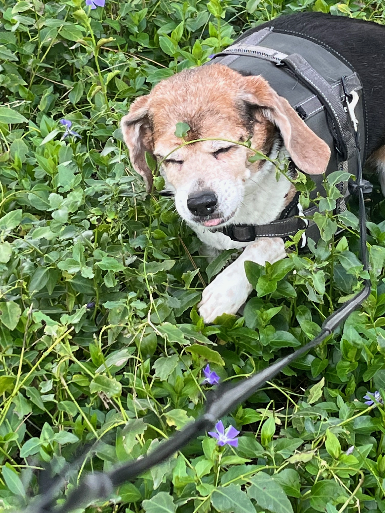
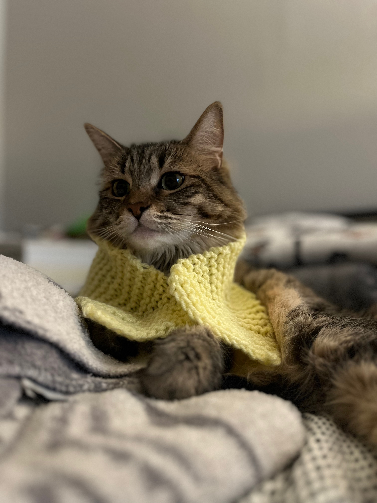

Pictured above: my precious baby cats, Teddy(left) and Keyge
Above is our precious beagle, Daisy. She is truly just the sweetest thing. She wouldn't hurt a fly, and she has the patience of a saint. Food motivated of the highest order. Our girl loves a snacky snack.
My amazing partner surprised me with Teddy in May 2020 in the midst of covid. I took one look at that precious little kitten, and we instantly formed a connection. She's my baby.